AI视频制作 · 对话式工作流 · 工具案例
YANSHI
AD VIDEO PRODUCTION AGENT
一个以文本框为入口的广告短视频制作工具。用户描述目标，Agent 梳理脚本、读取工作流程、生成素材、等待确认、局部重跑，并把每一轮产出留在同一条可追踪的会话里。

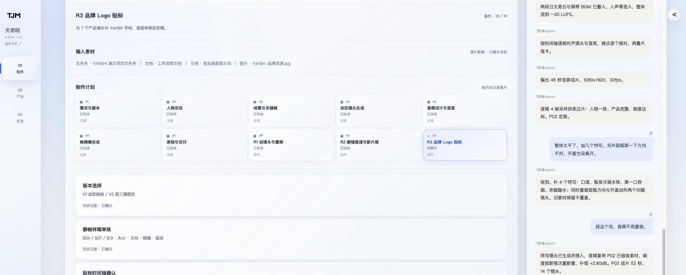
01 / OVERVIEW
它不是一个“生成按钮”，而是一套会停下来等你确认的制作工具。
YANSHI 这个虚拟矿泉水品牌广告，用来验证 Agent 是否能把真实广告制作拆成一条可沟通的工作流。用户不需要先理解脚本格式、镜头编号或 FFmpeg 参数，只需要在文本框里说清楚目标；Agent 负责把意图转成计划，并在关键判断发生前停下来。
- YEAR
- 2026
- TYPE
- AI Agent / Video Production
- ROLE
- 工具设计、创意、剪辑、质检
- INPUT
- 自然语言 + 本地素材
- OUTPUT
- P02 / P03 / P04 版本链
Agent 把模糊需求变成一张可以执行的计划。
工具的第一步不是立即生成画面，而是读取工作流程和视觉提示词，整理脚本、镜头序列、台词、声音分层和帧精确时间轴。

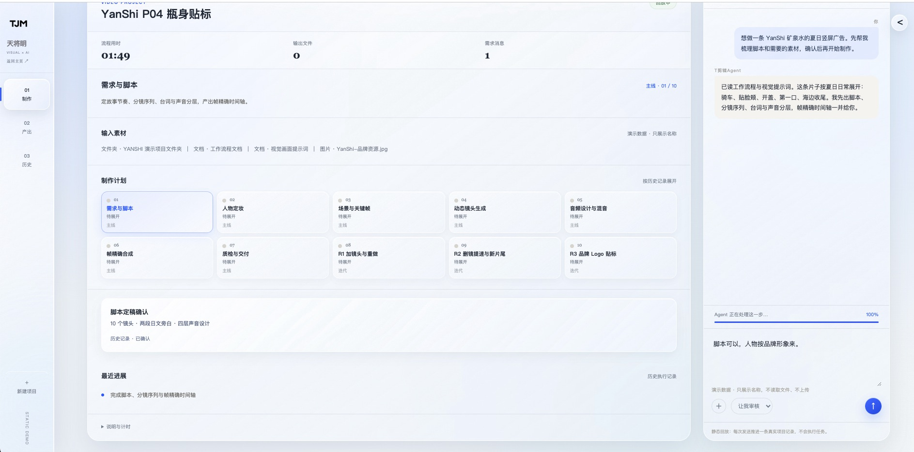

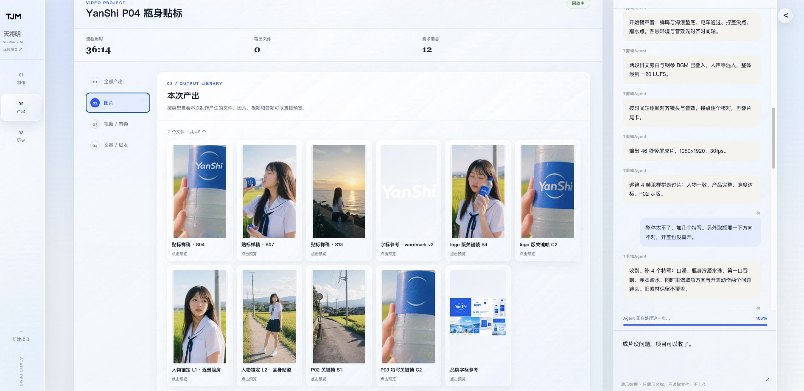


读懂上下文
读取工作流程、品牌资产和视觉提示词。
拆成可执行任务
把一句话拆成脚本、镜头、声音和验收节点。
在确认点停下
脚本、人物、关键帧和贴标方案由用户确认。
只重跑局部问题
只重跑 S6 开盖和取瓶方向等问题镜头。
保留每次版本
P02、P03、P04 和 V1/V2 都能回看比较。
把验收变成输出
抽帧、转写、响度和贴标检查都留下记录。
从人物锚定到关键帧，生成之前先把视觉规则固定下来。
这部分不是装饰性参考图，而是 Agent 后续每个镜头的约束证据：同一个人、同一套服装、同一方向和可控的产品画面。
两张锚定图，锁定脸、服装、体型与光向。


10 个镜头先过关键帧审查，再进入生视频。

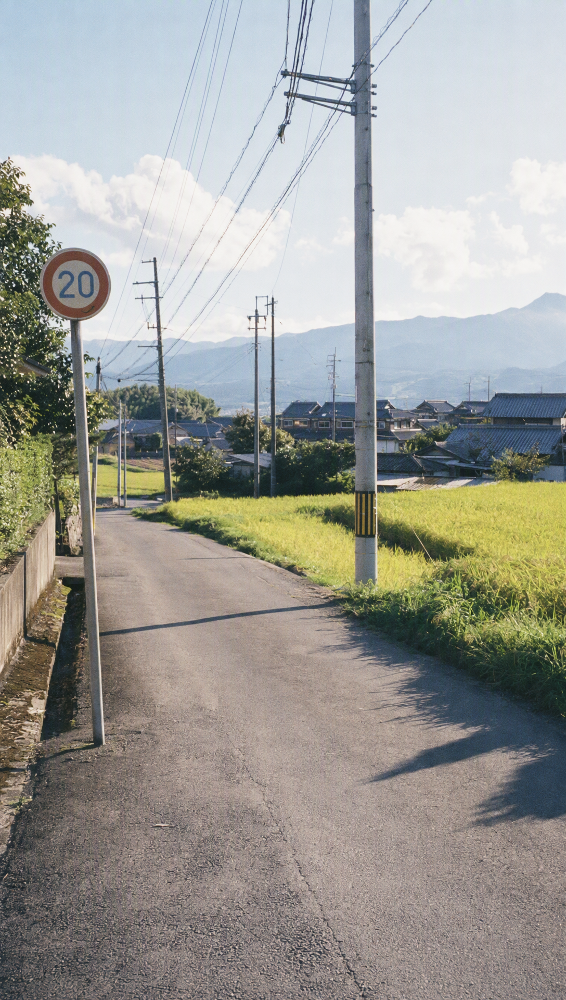


Agent 的过程状态，也成为项目的视觉材料。


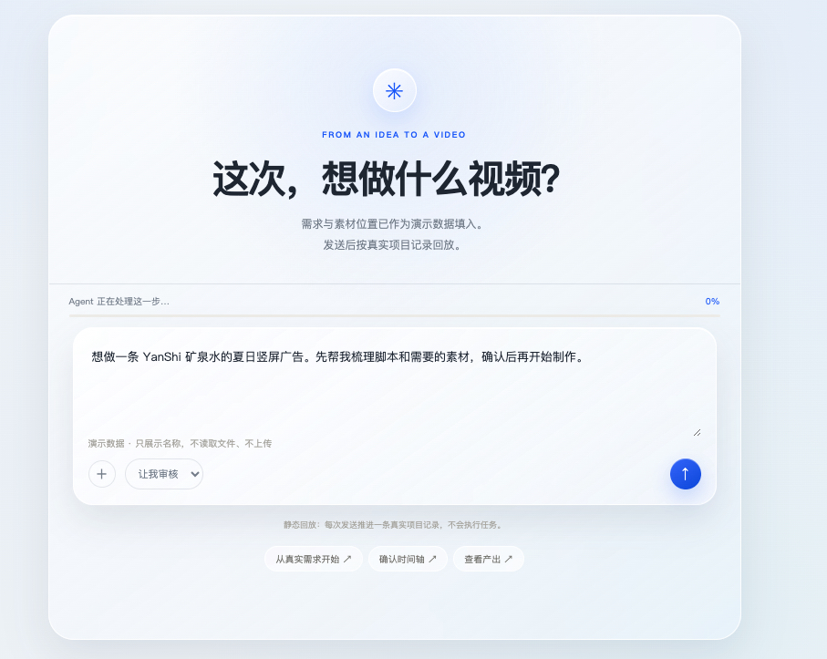
版本迭代不是重新生成，而是对问题做出可追踪的决定。
补特写、修正动作、删镜头、提速和更换动态片尾，都对应真实对话中的一次判断。
“整体太平了”之后，Agent 补入四类特写。


问题、Agent 决策、结果，全部留在版本链里。
V1 / BASELINE
先跑通全链路
镜头完成，但整体平、产品动作和品牌信息仍需继续处理。
V2 / LOCAL FIX
重做问题镜头
修正取瓶方向与开盖动作，只处理局部问题。
V3 / BRAND GAP
进入品牌贴标
镜头通过，但片尾和产品画面缺少稳定字标。
V4 / FINAL CUT
最终合成
删取瓶镜头、1.2 倍提速、替换动态片尾并恢复动态贴标。
贴标是一次工具能力测试：把品牌资产带进运动画面。
先看静帧样稿，再看动态跟踪；固定版本和动态版本都保留，最后由用户选择恢复第一版动态贴标。


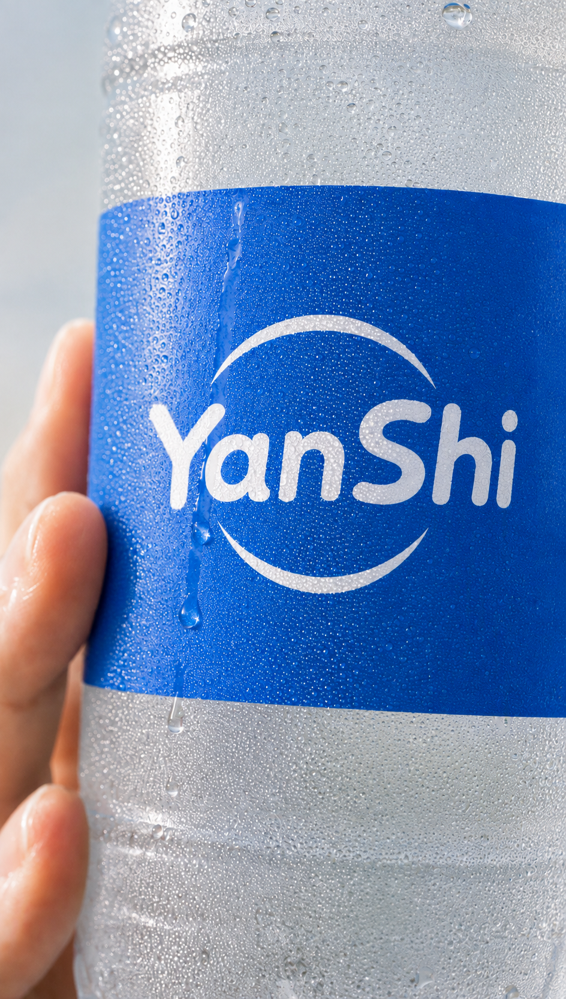

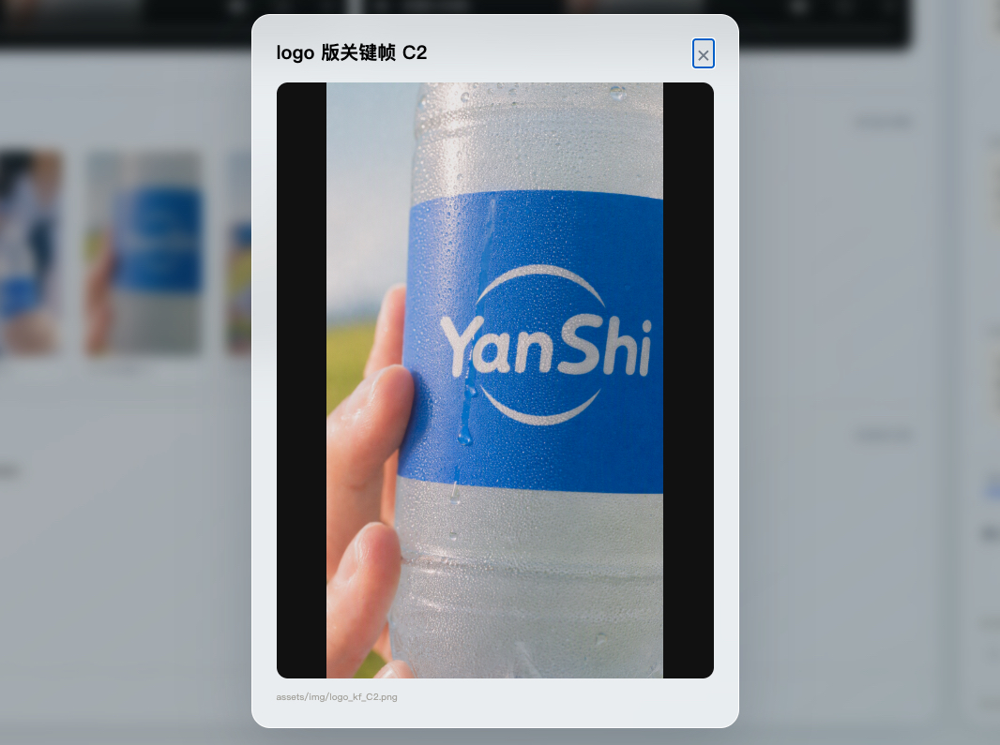


静帧确认后，继续检查旋转、遮挡、透视与漂移。
前三镜固定贴标的 V2 与后四镜动态跟踪版本同时保留。技术检查通过不等于人工最终批准，最终选择来自用户对两版动态效果的比较。
质检不只是结果页，而是 Agent 交付的一部分。
横向联络表保留完整比例，展示逐镜检查、字标验证、接缝和片尾后段，避免把复杂证据压缩成一句“通过”。

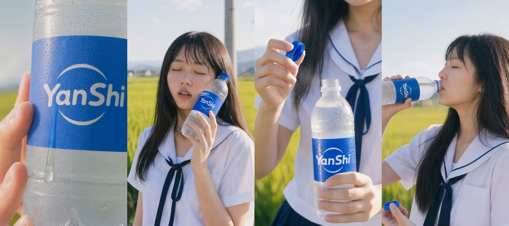

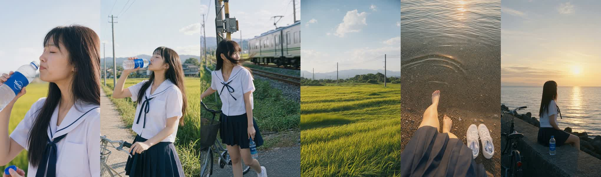

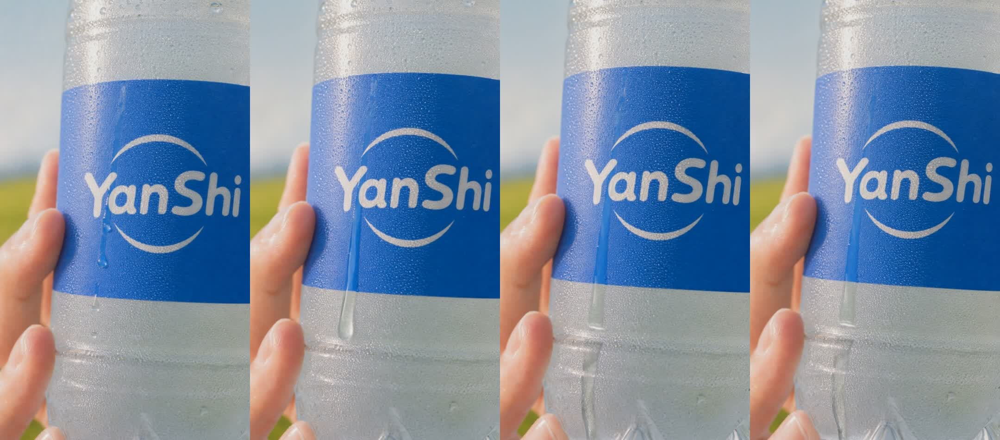

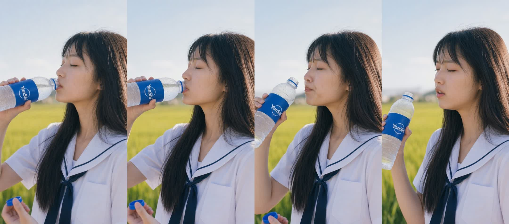

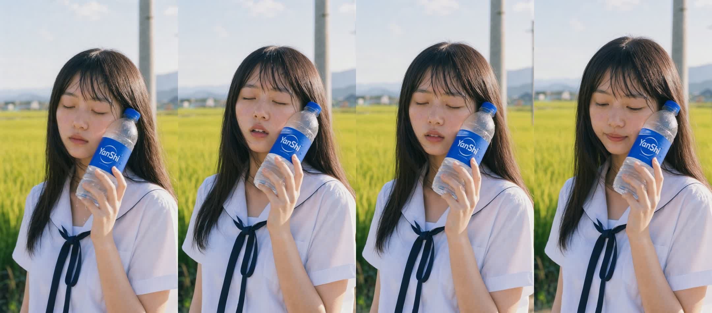

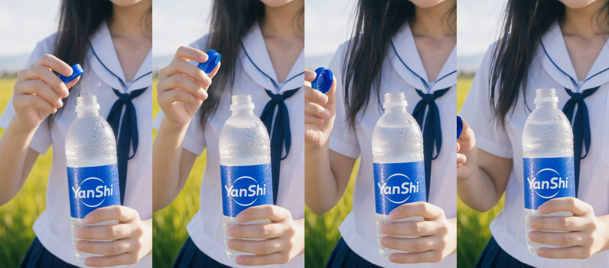
PROJECT CONCLUSION
视频是产出，真正的作品是这套让制作过程变得可见的 Agent 工具。
从文本框里的第一句话，到最后一次用户选择动态贴标版本，工具保留上下文、状态、分歧和结果，让人可以介入、比较和复盘。